数据结构-第二章：栈和队列
栈
栈的基本概念
栈的定义
栈是只允许在一端进行插入或删除操作的线性表。
重要术语：栈顶、栈底、空栈
特点：后进先出（LIFO）
栈的基本操作
- 创、销
- InitStack(&S)：初始化栈。构造空栈S，分配内存空间。
- DestroyStack(&S)：销毁栈。销毁并释放栈S所占用的内存空间。
- 增、删
- Push(&S,x)：进栈，若栈S未满，将x加入使之称为新栈顶。
- Pop(&S,&x)：出栈，若栈S非空，则弹出栈顶元素，并将x返回。
- 查
- GetTop(S,&x)：读栈顶元素。若栈S非空，则用x返回栈顶元素。
- 其它操作
- StackEmpty(S):判断栈S是否为空。若空返回true，否则返回false。
常考题型
进栈顺序：a→b→c→d→e
有哪些合法的出栈顺序？
栈的顺序存储实现
顺序栈的定义
1 |
|
1 | void testStack(){ |
初始化操作
1 | //初始化 |
1 | void testStack(){ |
进栈与出栈
- 进栈：将数据存入栈顶
- 出栈：将栈顶元素删除并存入一个变量中
1 | //入栈 |
1 | //出栈 |
出栈操作并没有在内存中删除元素，只是逻辑上移出了栈。
读取栈顶元素
1 | //出栈 |
另一种实现方式
令top指针初始化时指向0的位置，即top指针表示下一次插入元素的位置。
则初始化操作改为：1
2
3void InitStack(SqStack &S){
S.top=0; //初始化栈顶指针
}
进栈操作改为：1
2
3
4
5
6bool Push(SqStack &S,ElemType x){
if(S.top==MaxSize) //栈满，报错
return false;
S.data[S.top++]=x;
return true;
}
出栈操作改为：1
2
3
4
5
6bool Pop(SqStack &S,ElemType &x){
if(S.top==0) //栈空，报错
return false;
x=S.data[--S.top];
return true;
}
共享栈
顺序栈的大小不可改变，要解决这个问题可以使用链式存储的方式实现。也可以在初始分配时开辟一片比较大的空间，但这样很容易造成浪费，因此提出了共享栈的概念。
共享栈是两个栈共享同一片空间。
定义共享栈为：1
2
3
4
5
6
typeof struct{
ElemType data[MaxSize]; //静态数组存放栈中元素
int top0; //0号栈栈顶指针
int top1; //1号栈栈顶指针
}ShStack;
初始化操作为：1
2
3
4void InitStack(SqStack &S){
S.top0=-1; //初始化栈顶指针
S.top1=MaxSize;
}
栈满的条件为：top0+1==top1
栈的链式存储实现
链式存储的栈称为链栈。
其本质上也是一个链表，只是只能操作头结点。
可以分为带头结点和不带头结点两种。（推荐不带头结点）1
2
3
4
5//定义
typedef struct Linknode{
ElemType data;
struct Linknode *next;
}*LiStack;
其余操作自己复现。
队列
队列的基本概念
队列的定义
只允许在一端进行插入（入队），在另一端删除的线性表（出队）。
重要术语：队头、队尾、空队列
特点：先进先出，后进后出（FIFO）。
队列的基本操作
队列的顺序实现
初始化与定义
队列包含队头指针和队尾指针，队头指针指向队头元素，队尾指针指向下一个应该插入的位置。
1 |
|
1 | void testQueue(){ |
入队
1 | bool EnQueue(SqQueue &Q,ElemType x){ |
①通过取余操作令队列将存储空间在逻辑上变为环状（循环队列）。
同时，由于队头指针等于队尾指针已经是队列为空的充分条件，因此为了实现判断队列为满的操作，我们需要牺牲一个存储空间，从而将其充分条件变为队尾指针的下一位为队头指针，如②。
出队
删除队头元素，并用x返回。1
2
3
4
5
6
7
8bool DeQueue(SqQueue &Q,ElemType &x){
if(Q.rear==Q.front){ //队空则报错
return false;
}
x=Q.data[Q.front];
Q.front=(Q.front+1)%MaxSize;
return true;
}
查找
返回队头元素1
2
3
4
5
6
7bool GetHead(SqQueue Q,ElemType &x){
if(Q.rear==Q.front){ //队空则报错
return false;
}
x=Q.data[Q.front];
return true;
}
获取队列元素个数
1 | int GetSize(SqQueue Q){ |
空间利用：方案一
加入size记录元素数量。1
2
3
4
5
6
typedef struct{
ElemType data[MaxSize]; //静态数组存放队列元素
int front,rear; //队头指针和队尾指针
int size; //当前队列元素个数
}SqQueue;
空间利用：方案二
加入tag标签，每次删除成功时令tag=0，插入成功时令tag=1。结合tag判断是空是满。1
2
3
4
5
6
typedef struct{
ElemType data[MaxSize]; //静态数组存放队列元素
int front,rear; //队头指针和队尾指针
int tag; //最近进行的是插入还是删除。
}SqQueue;
其它方案
也可以令队尾指针指向最后一个元素。区别在于:
- 插入时先后移再插入元素
- 初始化时令队尾指针指向数组最后一个元素
- 判空:(Q.rear+1)%MaxSize==Q.front
- 判满：两种方式，同理
队列的链式实现
链式队列其实就是链表的阉割版，许多操作与链表大同小异。
链式队列定义
1 |
|
初始化
- 带头结点
1 | //初始化 |
- 不带头结点
1 | //初始化 |
注：队头指针始终指向头结点
1 | void testLinkQueue(){ |
入队
先申请一个新结点，并将元素放入新结点中
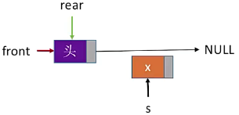令新结点next指针设为NULL
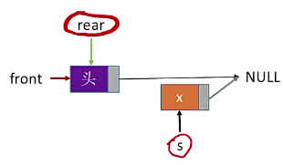令当前rear指向节点的next指向新结点
更新表尾指针
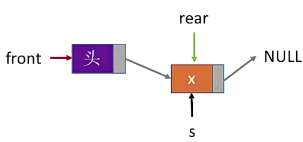
不带头结点的类似。
用代码实现为：1
2
3
4
5
6
7
8
9
10
11
12
13
14
15
16
17
18
19
20
21
22//带头结点
void EnQueue(LinkQueue &Q, ElemType x){
LinkNode *s=(LinkNode *)malloc(sizeof(LinkNode));
s->data=x;
s->next=NULL;
Q.rear->next=s; //新结点插入至rear后
Q.rear=s; //修改表尾指针
}
//不带头结点
void EnQueue(LinkQueue &Q, ElemType x){
LinkNode *s=(LinkNode *)malloc(sizeof(LinkNode));
s->data=x;
s->next=NULL;
if(Q.front==NULL){ //在空队列中插入第一个元素
Q.front=s; //修改队头队尾指针
Q.rear=s;
}else{
Q.rear->next=s; //新结点插入至rear后
Q.rear=s; //修改表尾指针
}
}
出队
先令队头（头结点）后向指针指向队头的下一个结点
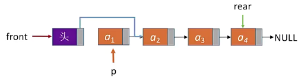如果队列只有一个结点，还需要修改rear指针
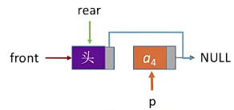然后释放该结点
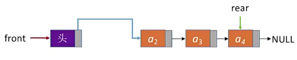
不带头结点的类似。
代码实现为：1
2
3
4
5
6
7
8
9
10
11
12
13
14
15
16
17
18
19
20
21
22
23
24
25
26
27//带头结点
bool DeQueue(LinkQueue &Q, ElemType &x){
if(Q.front==Q.rear)
return false; //空队
LinkNode *p=Q.front->next;
x=p->data;
Q.front-next=p->next; //修改头结点的next指针
if(Q.rear==p)
Q.rear=Q.front; //如果是最后一个结点出队，修改rear指针
free(p);
return true;
}
//不带头结点
bool DeQueue(LinkQueue &Q,ElemType &x){
if(Q.front==NULL)
return false; //空队
LinkNode *p=Q.front；
x=p->data;
Q.front=p->next;
if(Q.rear==p){ //如果是最后一个结点出队
Q.front=NULL;
Q.rear=NULL;
}
free(p);
return true;
}
双端队列
双端队列是允许从两端插入、两端删除的线性表。
双端队列的单独一端其实就是栈，所以栈能实现的功能双端队列均可实现。
双端队列还可以分为：
- 输入受限的双端队列：只允许一端插入、两端删除的线性表
- 输出受限的双端队列：只允许一端删除、两端插入的线性表
常考题型
对输出序列合法性的判断。不做阐述，见题即可。
栈与队列的应用
栈的应用——括号匹配
问题介绍
判断表达式的括号是否正确。
问题分析
可以发现，最后出现的左括号最先被匹配（LIFO）。因此可用栈来实现该特性。
扫描到左括号就压栈，扫描到右括号就出栈。如果出现以下情况，就说明表达式有误：
- 扫描到右括号后发现与栈顶不匹配
- 扫描到右括号时栈空
- 扫描完成后栈不为空
流程图为：
代码
假设使用顺序栈。1
2
3
4
5
typeof struct{
ElemType data[MaxSize]; //静态数组存放栈中元素
int top; //栈顶指针
}SqStack;
1 | bool bracketCheck(char str[], int length){ |
虽然考试中可以使用顺序栈，但实际问题中一般使用链栈，方便扩容。
栈的应用——表达式求值（上）
三种表达式
表达式需要界限符（基本指括号）的参与才能无歧义地表达运算顺序。
是否可以不用界限符也能明确表达算算式呢？基于这个想法，诞生了波兰表达式（前缀表达式）、逆波兰表达式（后缀表达式）。
- 中缀表达式：运算符在两个操作数中间
- a+b
- a+b-c
- a+b-c*d
- 后缀表达式：运算符在两个操作数后面
- ab+
- ab+c-
- ab+cd*-
- 前缀表达式：运算符在两个操作数前面
- +ab
- -+abc
- -+ab*cd
后缀表达式的计算
中缀与后缀的相互转换（手算）
中缀转后缀：
- 确定中缀表达式中各个运算符的运算顺序
- 选择下一个运算符，按照“左操作数 右操作数 运算符”的方式组合成一个新的操作数
- 若还有运算符没被处理，就继续②
由于①中顺序不唯一，因此对应的后缀表达式也不唯一。但由于算法需要具有确定性，因此我们通常采取“左优先”原则，即先让左侧的运算符执行。所以以计算机视角来看，下图只有左侧是正确的。
后缀转中缀：
从左往右扫描，每遇到一个运算符，就让运算符前面最近的两个操作数执行对应运算，合体为一个操作数。
机算
可以发现，后缀表达式的特点是最后出现的操作数先被运算，与栈的思想类似，所以可以采取栈结构来解决问题。具体实现方式为：
- 从左往右扫描下一个元素，直到处理完所有元素
- 若扫描到操作数则压入栈，并回到①；否则执行③（注意：先出栈的是右操作数）
- 若扫描到运算符，则弹出两个栈顶元素，执行相应运算，运算结果压回栈顶，回到①
以下图为例：
先扫描到A，压入栈中
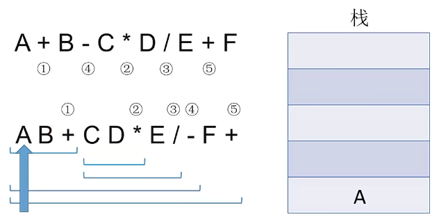再扫描到B，压入栈中
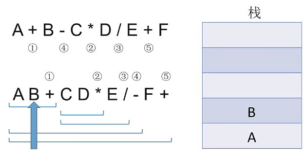扫描到运算符，弹出两个栈顶元素，执行运算
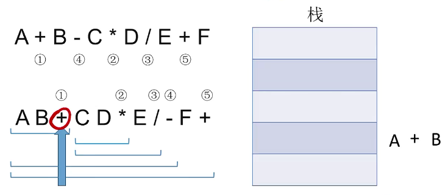再将运算结果压回栈中
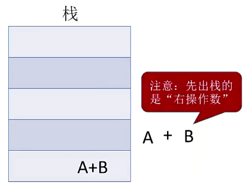
中缀与前缀的相互转换（手算）
手算
中缀转前缀：
- 确定中缀表达式中各个运算符的运算顺序
- 选择下一个运算符，按照“运算符 左操作数 右操作数”的方式组合成一个新的操作数
- 若还有运算符没被处理，就继续②
前缀表达式和后缀表达相反，采用“右优先”原则。
机算
与后缀表达式类似：
- 从右往左扫描下一个元素，直到处理完所有元素
- 若扫描到操作数则压入栈，并回到①；否则执行③（注意：先出栈的是左操作数）
- 若扫描到运算符，则弹出两个栈顶元素，执行相应运算，运算结果压回栈顶，回到①
栈的应用——表达式求值（下）
中缀转后缀（机算）
初始化一个栈，用于保存暂时还不能确定运算顺序的运算符。
从左到右处理各个元素直到末尾，可能遇到三种情况：
- 操作数：直接加入后缀表达式
- 界限符：
- 左括号：直接入栈
- 右括号：依次弹出栈内运算符并加入后缀表达式，直到弹出左括号
- 运算符：依次弹出栈中优先级高于或等于当前运算符的所有运算符，并加入后缀表达式。若碰到左括号或栈空就停止。之后再把当前运算符入栈
按上述方法处理完所有字符后，将栈中剩余运算符依次弹出并加入后缀表达式。
以下例作为演示：
扫描至操作数，直接加入后缀表达式
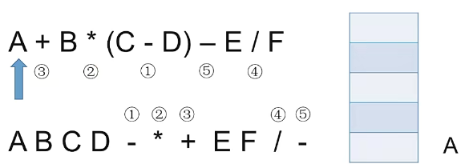扫描至运算符，栈空，直接入栈
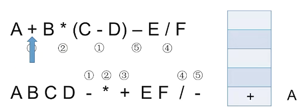扫描至操作数，直接加入后缀表达式
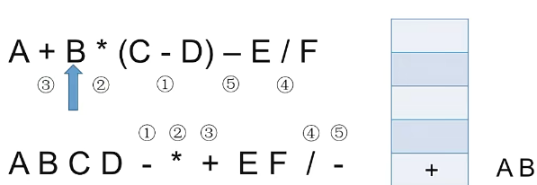扫描至运算符，栈中无优先级更高的运算符，直接入栈
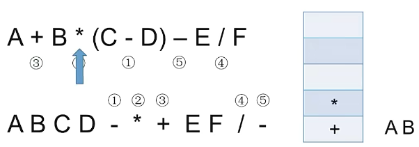扫描至左括号，入栈
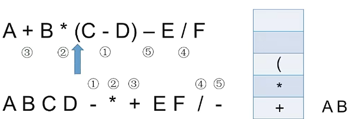扫描至操作数，直接加入后缀表达式
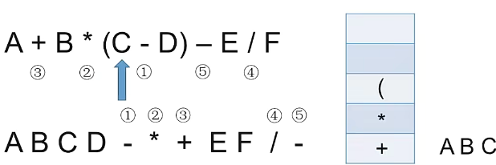扫描至运算符，栈顶为左括号，直接入栈
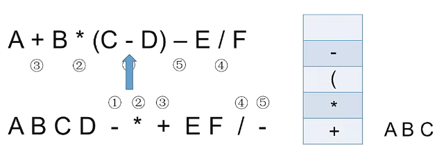扫描至操作数，直接加入后缀表达式
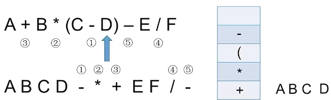扫描至右括号，依次弹出栈内运算符并加入表达式直到弹出左括号
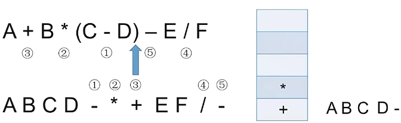···
中缀表达式的计算：
中缀表达式的计算=中缀转后缀+后缀表达式求值。
- 初始化栈，分别为操作数栈和运算符栈
- 若扫描到操作数，压入操作数栈
- 若扫描到运算符或界限符，按“中缀转后缀”的逻辑压入运算符栈（期间也会弹出运算符，每当弹出一个运算符时就需要弹出两个操作数栈的栈顶元素并执行相应运算，运算结构再压会操作数栈
- 若表达式正确，当操作符栈空后操作数栈的会存在唯一的数即为结果
不再详细演示。
栈的应用——递归
函数调用的过程
函数调用的特点：最后呗调用的函数最先执行结束（LIFO）。
因此，函数调用时使用栈存储：
- 调用返回地址
- 实参
- 局部变量
栈在递归中的应用
递归算法适合解决：把原属问题转换为属性相同但规模较小的问题，如：
其具体工作过程为：
- 递归调用时，函数调用栈可称为“递归工作栈”
- 每进入一层递归，九江递归调用所需信息压入栈顶
- 每退出一层递归，就从栈顶弹出相应信息
但有明显缺点：
- 太多层递归可能导致栈溢出
- 可能包含很多重复计算（如计算斐波那契数列）
我们也可以自定义栈，将递归算法改造成非递归算法。
特殊矩阵的压缩存储
数组的存储结构
一维数组
- 各数组元素大小相同，且物理上连续存放
- 数组元素a[i]=LOC+i*sizeof(ElemType)(0<=i<10)
除非题目要求，否则默认数组下标从0开始。
二维数组
由于内存是一维的连续空间，因此也要将二维数组转换为线性存储进内存。
非为行优先存储和列优先存储。
- 行优先存储：先存储行
- 计算公式：b[i][j]的存储地址=LOC+(i*N+j)*sizeof(ElemType)
- 列优先存储：先存储列
- 计算公式：b[i][j]的存储地址=LOC+(j*M+i)*sizeof(ElemType)
普通矩阵的存储
可用二维数组直接存储。
注意，描述矩阵元素时，行列号通常从1开始；描述数组时下标通常从0开始。
特殊矩阵的存储
某些特殊矩阵可以通过特殊存储方式压缩存储空间。
对称矩阵
压缩策略：只存储主对角线+下三角区。
- 按行优先原则将个元素存入一维数组中。
- 共存储(1+n)*n/2个元素
- 建立映射
- 若i>j，找到$a_{ij}$是第几个元素
- 若j>i，则$a{ji}=a{ij}$，同上
行优先原则也同理，不再赘述。
三角矩阵
分为上三角矩阵和下三角矩阵，这里以下三角矩阵为例，上三角矩阵类似。
压缩策略：
- 按行优先原则将橙色区域存入一维数组，并在最后一个位置存储常量c
- 共有(1+n)*n/2+1个元素
- 建立映射
- 若i>j，找到$a_{ij}$是第几个元素
- 若j>i，则直接找到一维数组的最后一个位置
行优先原则也同理，不再赘述。
三对角称阵
三对角矩阵，又称带状矩阵。当$|i-1|>1$时，有$a_{i,j}=0$。
压缩策略：
- 按行优先原则存储带状部分
- 共有3*n-2-1=3n-3个元素
- 建立映射
- 若|i-1|<=1：
- 前i-1行共3(i-1)-1个元素
- $a_{i,j}$是第i行第j-i+2个元素
- $a_{i,j}$是第i行第3i+j-2个元素（数组下标还要再-1）
- 若|i-1|>=1：得0
- 若|i-1|<=1：
若已知数组下标k，得到i和j：
- 即求第k+1个元素在第几行第几列
- 前i-1行共3(i-1)-1个元素
- 前i行共3i-1个元素
- 显然，3(i-1)-1
- 再由i和k得到j
稀疏矩阵
稀疏矩阵：分零元素远远少于矩阵元素的个数
压缩存储策略：
- 顺序存储：构造三元组struct包含<行，列，值>
- 十字链表法：
- 用两个数组存储指针，向下域存储指向第j列第一个元素的指针，向右域存储指向第i行第一个元素的指针
- 每个结点存储了<行,列,值>，和指向同列的下一个元素和同行的下一个元素共两个指针